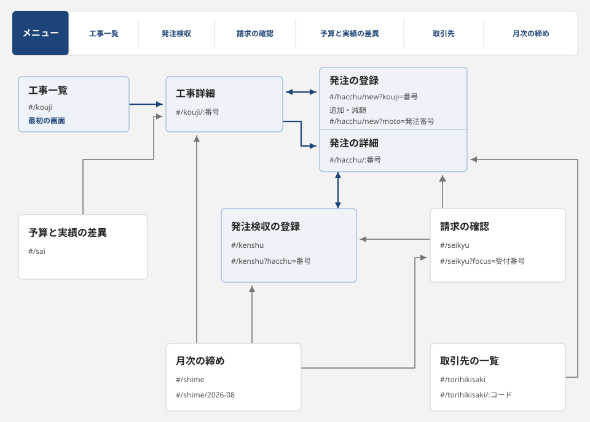
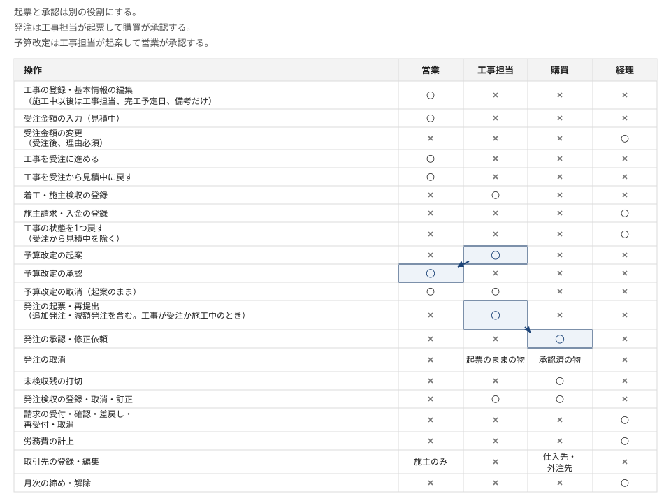

画面の一覧と遷移
設備工事の会社の業務画面8枚について、役割と行き来、権限、状態の変わり方を整理しました。会社名は青嶺設備工業株式会社（架空）で、工事名、取引先名も全て架空です。
8画面の一覧
| 画面名 | 誰が使うか | 何のための 画面か | 入口 | 出口 | 主な項目の数 |
|---|---|---|---|---|---|
| 工事一覧 | 全員（工事の登録は営業） | 工事を探して開き、自分の役割で待っている操作を確かめる | 最初の画面 メニュー |
工事詳細 | 工事 19 |
| 工事詳細 | 全員（項目差あり） | 1件の工事の状態を進めたり |
工事一覧 予算と実績の差異 発注の詳細 月次の締め |
発注の登録 発注の詳細 |
工事 19 予算改定 10 |
| 発注の登録、 発注の詳細 |
工事担当（起票、再提出）、購買（承認、修正依頼、打切、取消） | 発注を起票し、承認、修正依頼、再提出、取消、打切を行う。追加発注と減額発注もここから起票する | 工事詳細 発注検収の登録 請求の確認 取引先の一覧 |
工事詳細 発注検収の登録 |
発注 14 |
| 発注検収の登録 | 工事担当、購買 | 発注ごとに検収日と検収額を登録し、取消と訂正を行う | メニュー 発注の詳細 請求の確認 月次の締め |
発注の詳細 | 発注検収 10 |
| 請求の確認 | 経理 | 受け付けた請求を発注検収の累計と照らし、計上月を選んで確認済にするか、差戻しか取消にする | メニュー 月次の締め |
発注の詳細 発注検収の登録 |
請求 13 |
| 予算と実績の差異 | 営業、工事担当、経理 | 工事と費目ごとに予算、発注済、発生原価を並べて超過を見つけ、CSV で書き出す | メニュー | 工事詳細 | 集計の列 5 |
| 取引先の一覧 | 全員（項目差あり） | 取引先を区分と名称で探し、発注の履歴と支払予定を見る | メニュー | 発注の詳細 | 取引先 8 |
| 月次の締め | 経理 | 締めを止めている項目を確かめ、労務費を計上して月を締める。締めの解除もここで行う | メニュー | 請求の確認 発注検収の登録 工事詳細 |
労務費の 計上 7 |
画面の行き来


役割ごとの権限
起票と承認は別の役割にしてあり、発注は工事担当が起票して購買が承認し、予算改定は工事担当が起案して営業が承認します。


状態遷移の表
操作ごとに、状態の変わり方、できる役割、前提、後始末、取消の方法を対象別に並べます。